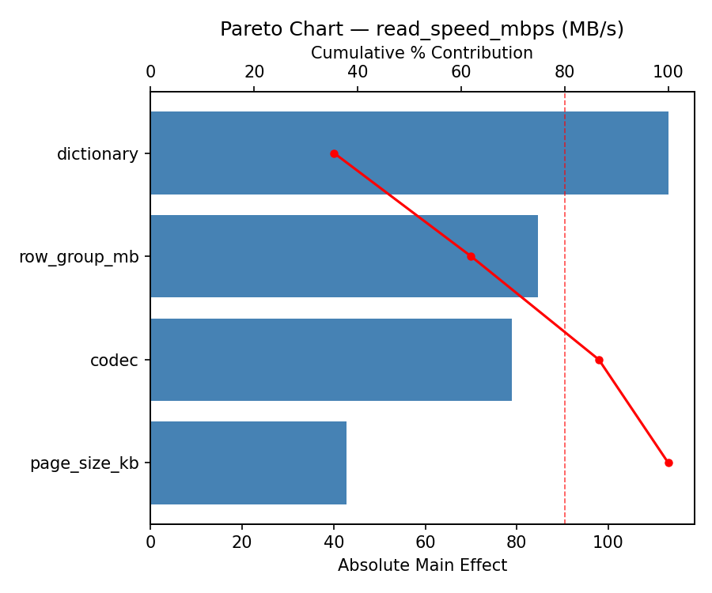
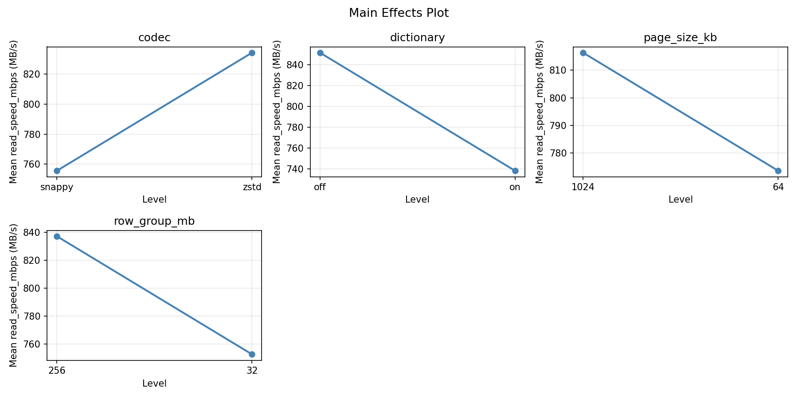
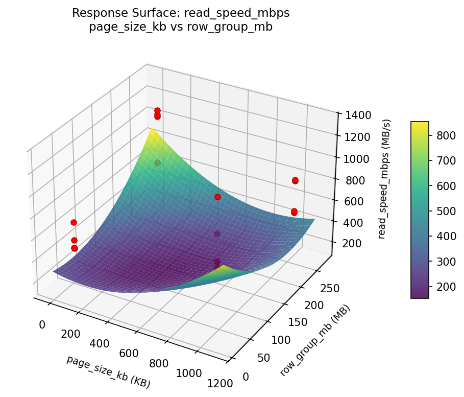

Experimental Setup
Factors
| Factor | Low | High | Unit |
|---|---|---|---|
codec | snappy | zstd | |
dictionary | off | on | |
page_size_kb | 64 | 1024 | KB |
row_group_mb | 32 | 256 | MB |
Fixed: format = parquet, data_type = mixed_analytics
Responses
| Response | Direction | Unit |
|---|---|---|
compression_ratio | ↑ maximize | x |
read_speed_mbps | ↑ maximize | MB/s |
Configuration
use_cases/41_columnar_compression/config.json
{
"metadata": {
"name": "Columnar Compression",
"description": "Full factorial of compression codec, dictionary encoding, page size, and row group size for ratio vs speed"
},
"factors": [
{
"name": "codec",
"levels": [
"snappy",
"zstd"
],
"type": "categorical",
"unit": ""
},
{
"name": "dictionary",
"levels": [
"off",
"on"
],
"type": "categorical",
"unit": ""
},
{
"name": "page_size_kb",
"levels": [
"64",
"1024"
],
"type": "continuous",
"unit": "KB"
},
{
"name": "row_group_mb",
"levels": [
"32",
"256"
],
"type": "continuous",
"unit": "MB"
}
],
"fixed_factors": {
"format": "parquet",
"data_type": "mixed_analytics"
},
"responses": [
{
"name": "compression_ratio",
"optimize": "maximize",
"unit": "x"
},
{
"name": "read_speed_mbps",
"optimize": "maximize",
"unit": "MB/s"
}
],
"settings": {
"operation": "full_factorial",
"test_script": "use_cases/41_columnar_compression/sim.sh"
}
}
Experimental Matrix
The Full Factorial Design produces 16 runs. Each row is one experiment with specific factor settings.
| Run | codec | dictionary | page_size_kb | row_group_mb |
|---|---|---|---|---|
| 1 | snappy | on | 1024 | 256 |
| 2 | zstd | off | 64 | 256 |
| 3 | snappy | on | 64 | 256 |
| 4 | snappy | on | 1024 | 32 |
| 5 | zstd | on | 1024 | 32 |
| 6 | zstd | off | 1024 | 32 |
| 7 | zstd | on | 64 | 32 |
| 8 | zstd | off | 64 | 32 |
| 9 | snappy | off | 64 | 256 |
| 10 | snappy | off | 1024 | 32 |
| 11 | zstd | on | 64 | 256 |
| 12 | zstd | on | 1024 | 256 |
| 13 | snappy | on | 64 | 32 |
| 14 | zstd | off | 1024 | 256 |
| 15 | snappy | off | 64 | 32 |
| 16 | snappy | off | 1024 | 256 |
Step-by-Step Workflow
1
Preview the design
Terminal
$ python doe.py info --config use_cases/41_columnar_compression/config.json
2
Generate the runner script
Terminal
$ python doe.py generate --config use_cases/41_columnar_compression/config.json \
--output use_cases/41_columnar_compression/results/run.sh --seed 42
3
Execute the experiments
Terminal
$ bash use_cases/41_columnar_compression/results/run.sh
4
Analyze results
Terminal
$ python doe.py analyze --config use_cases/41_columnar_compression/config.json
5
Get optimization recommendations
Terminal
$ python doe.py optimize --config use_cases/41_columnar_compression/config.json
6
Generate the HTML report
Terminal
$ python doe.py report --config use_cases/41_columnar_compression/config.json \
--output use_cases/41_columnar_compression/results/report.html
Features Exercised
| Feature | Value |
|---|---|
| Design type | full_factorial |
| Factor types | continuous (2), categorical (2) |
| Arg style | double-dash |
| Responses | 2 (compression_ratio ↑, read_speed_mbps ↑) |
| Total runs | 16 |
Analysis Results
Generated from actual experiment runs using the DOE Helper Tool.
Response: compression_ratio
Top factors: page_size_kb (32.7%), row_group_mb (30.0%), dictionary (27.1%).
Pareto Chart

Main Effects Plot

Response: read_speed_mbps
Top factors: row_group_mb (55.8%), codec (17.4%), page_size_kb (15.4%).
Pareto Chart

Main Effects Plot

Response Surface Plots
3D surfaces fitted with quadratic RSM. Red dots are observed data points.
compression ratio page size kb vs row group mb

read speed mbps page size kb vs row group mb

Full Analysis Output
doe analyze
=== Main Effects: compression_ratio ===
Factor Effect Std Error % Contribution
--------------------------------------------------------------
page_size_kb 1.7012 0.5386 32.7%
row_group_mb -1.5562 0.5386 30.0%
dictionary 1.4087 0.5386 27.1%
codec 0.5288 0.5386 10.2%
=== Interaction Effects: compression_ratio ===
Factor A Factor B Interaction % Contribution
------------------------------------------------------------------------
page_size_kb row_group_mb -1.3788 29.9%
dictionary page_size_kb 1.1613 25.2%
dictionary row_group_mb -0.9612 20.8%
codec dictionary 0.5488 11.9%
codec row_group_mb 0.3488 7.6%
codec page_size_kb 0.2162 4.7%
=== Summary Statistics: compression_ratio ===
codec:
Level N Mean Std Min Max
------------------------------------------------------------
snappy 8 4.1900 2.0527 1.6700 7.6100
zstd 8 4.7188 2.3603 1.7700 8.7000
dictionary:
Level N Mean Std Min Max
------------------------------------------------------------
off 8 3.7500 1.5476 1.6700 6.7300
on 8 5.1587 2.5328 1.7700 8.7000
page_size_kb:
Level N Mean Std Min Max
------------------------------------------------------------
1024 8 3.6037 1.2419 1.6700 4.8000
64 8 5.3050 2.5977 2.4400 8.7000
row_group_mb:
Level N Mean Std Min Max
------------------------------------------------------------
256 8 5.2325 2.2952 1.6700 8.7000
32 8 3.6763 1.8146 1.7700 7.5200
=== Main Effects: read_speed_mbps ===
Factor Effect Std Error % Contribution
--------------------------------------------------------------
row_group_mb 348.3750 65.8871 55.8%
codec -108.6250 65.8871 17.4%
page_size_kb -96.3750 65.8871 15.4%
dictionary -71.3750 65.8871 11.4%
=== Interaction Effects: read_speed_mbps ===
Factor A Factor B Interaction % Contribution
------------------------------------------------------------------------
dictionary row_group_mb -188.3750 35.4%
codec row_group_mb -112.1250 21.1%
page_size_kb row_group_mb -94.3750 17.8%
dictionary page_size_kb 92.3750 17.4%
codec page_size_kb -35.8750 6.7%
codec dictionary -8.3750 1.6%
=== Summary Statistics: read_speed_mbps ===
codec:
Level N Mean Std Min Max
------------------------------------------------------------
snappy 8 849.2500 257.9129 531.0000 1137.0000
zstd 8 740.6250 274.9114 478.0000 1323.0000
dictionary:
Level N Mean Std Min Max
------------------------------------------------------------
off 8 830.6250 326.9395 478.0000 1323.0000
on 8 759.2500 197.5787 547.0000 1077.0000
page_size_kb:
Level N Mean Std Min Max
------------------------------------------------------------
1024 8 843.1250 300.3657 483.0000 1323.0000
64 8 746.7500 230.8913 478.0000 1098.0000
row_group_mb:
Level N Mean Std Min Max
------------------------------------------------------------
256 8 620.7500 131.7300 478.0000 829.0000
32 8 969.1250 249.2660 553.0000 1323.0000
Optimization Recommendations
doe optimize
=== Optimization: compression_ratio ===
Direction: maximize
Best observed run: #12
codec = snappy
dictionary = off
page_size_kb = 64
row_group_mb = 256
Value: 8.7
RSM Model (linear, R² = 0.4794, Adj R² = 0.2901):
Coefficients:
intercept +4.4544
codec -0.0194
dictionary -1.1144
page_size_kb -0.8894
row_group_mb -0.2294
RSM Model (quadratic, R² = 0.6891, Adj R² = -3.6641):
Coefficients:
intercept +0.8909
codec -0.0194
dictionary -1.1144
page_size_kb -0.8894
row_group_mb -0.2294
codec*dictionary +0.0494
codec*page_size_kb +0.6494
codec*row_group_mb -0.2531
dictionary*page_size_kb +0.4794
dictionary*row_group_mb +0.3244
page_size_kb*row_group_mb -0.2981
codec^2 +0.8909
dictionary^2 +0.8909
page_size_kb^2 +0.8909
row_group_mb^2 +0.8909
Curvature analysis:
codec coef=+0.8909 convex (has a minimum)
dictionary coef=+0.8909 convex (has a minimum)
page_size_kb coef=+0.8909 convex (has a minimum)
row_group_mb coef=+0.8909 convex (has a minimum)
Notable interactions:
codec*page_size_kb coef=+0.6494 (synergistic)
dictionary*page_size_kb coef=+0.4794 (synergistic)
dictionary*row_group_mb coef=+0.3244 (synergistic)
Predicted optimum (from linear model):
codec = snappy
dictionary = off
page_size_kb = 64
row_group_mb = 32
Predicted value: 6.7069
Model quality: Weak fit — consider adding center points or using a different design.
Factor importance:
1. dictionary (effect: -2.2, contribution: 49.5%)
2. page_size_kb (effect: 1.8, contribution: 39.5%)
3. row_group_mb (effect: 0.5, contribution: 10.2%)
4. codec (effect: -0.0, contribution: 0.9%)
=== Optimization: read_speed_mbps ===
Direction: maximize
Best observed run: #1
codec = zstd
dictionary = on
page_size_kb = 64
row_group_mb = 32
Value: 1323.0
RSM Model (linear, R² = 0.3368, Adj R² = 0.0956):
Coefficients:
intercept +794.9375
codec +106.8125
dictionary +92.4375
page_size_kb -3.6875
row_group_mb +44.3125
RSM Model (quadratic, R² = 0.5910, Adj R² = -5.1345):
Coefficients:
intercept +158.9875
codec +106.8125
dictionary +92.4375
page_size_kb -3.6875
row_group_mb +44.3125
codec*dictionary +66.8125
codec*page_size_kb +57.4375
codec*row_group_mb -60.0625
dictionary*page_size_kb -52.9375
dictionary*row_group_mb -47.9375
page_size_kb*row_group_mb +9.1875
codec^2 +158.9875
dictionary^2 +158.9875
page_size_kb^2 +158.9875
row_group_mb^2 +158.9875
Curvature analysis:
codec coef=+158.9875 convex (has a minimum)
dictionary coef=+158.9875 convex (has a minimum)
page_size_kb coef=+158.9875 convex (has a minimum)
row_group_mb coef=+158.9875 convex (has a minimum)
Notable interactions:
codec*dictionary coef=+66.8125 (synergistic)
codec*row_group_mb coef=-60.0625 (antagonistic)
codec*page_size_kb coef=+57.4375 (synergistic)
dictionary*page_size_kb coef=-52.9375 (antagonistic)
dictionary*row_group_mb coef=-47.9375 (antagonistic)
page_size_kb*row_group_mb coef=+9.1875 (synergistic)
Predicted optimum (from linear model):
codec = zstd
dictionary = on
page_size_kb = 64
row_group_mb = 256
Predicted value: 1042.1875
Model quality: Weak fit — consider adding center points or using a different design.
Factor importance:
1. codec (effect: 213.6, contribution: 43.2%)
2. dictionary (effect: 184.9, contribution: 37.4%)
3. row_group_mb (effect: -88.6, contribution: 17.9%)
4. page_size_kb (effect: 7.4, contribution: 1.5%)